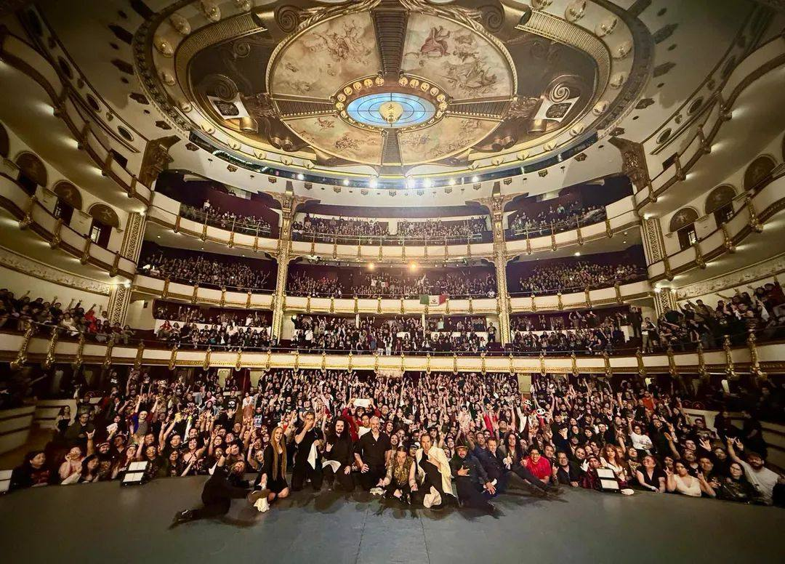
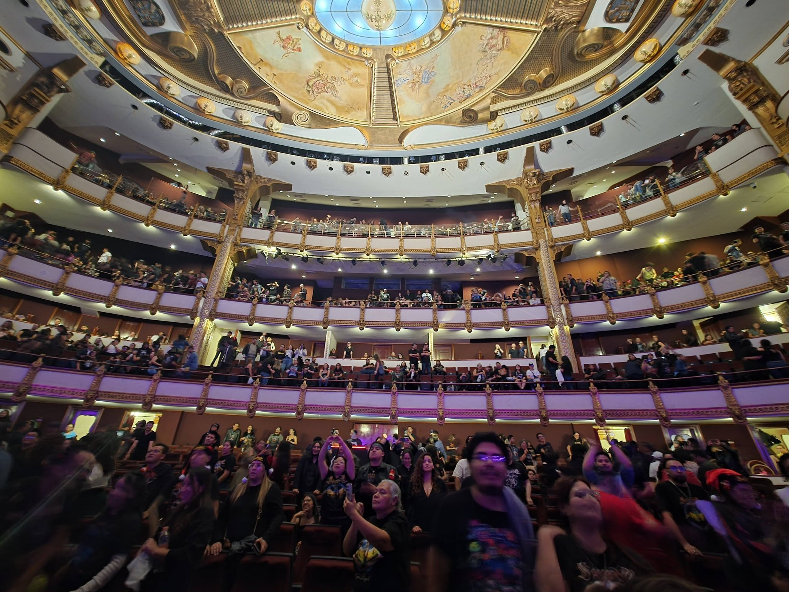
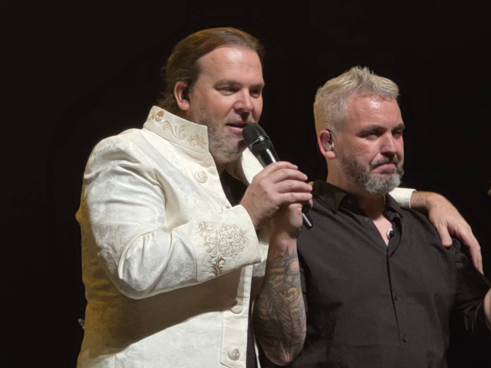
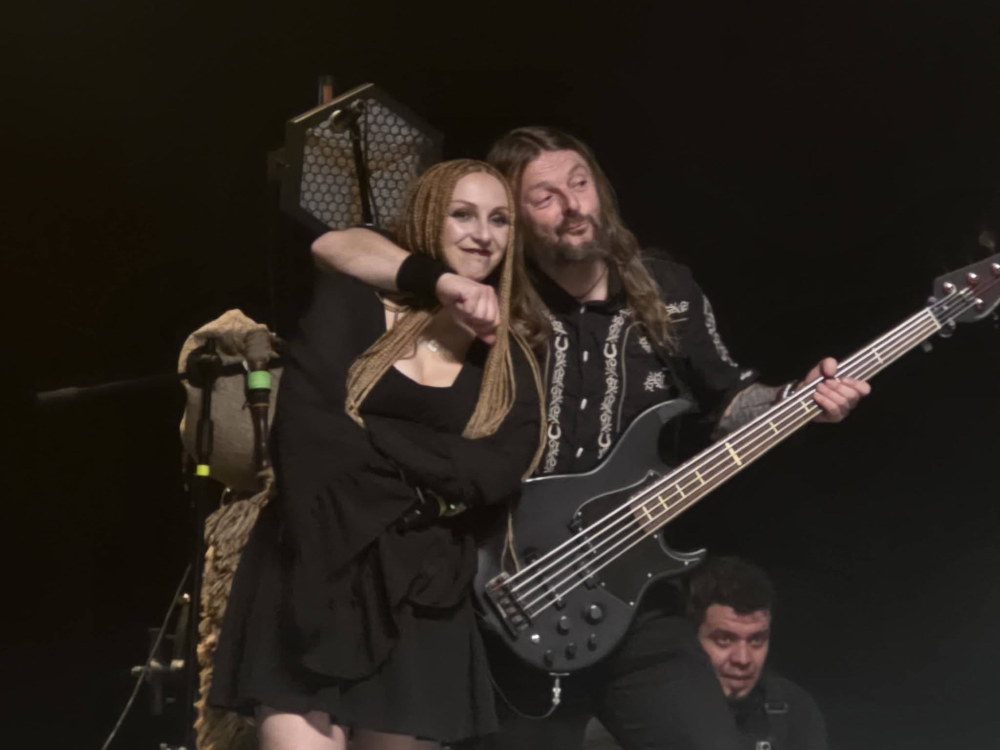
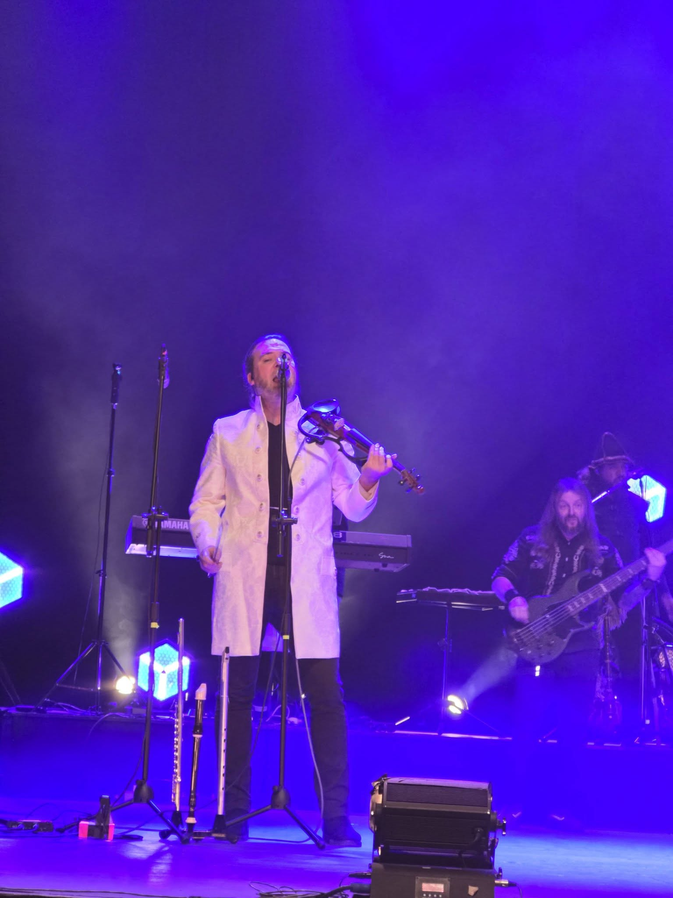
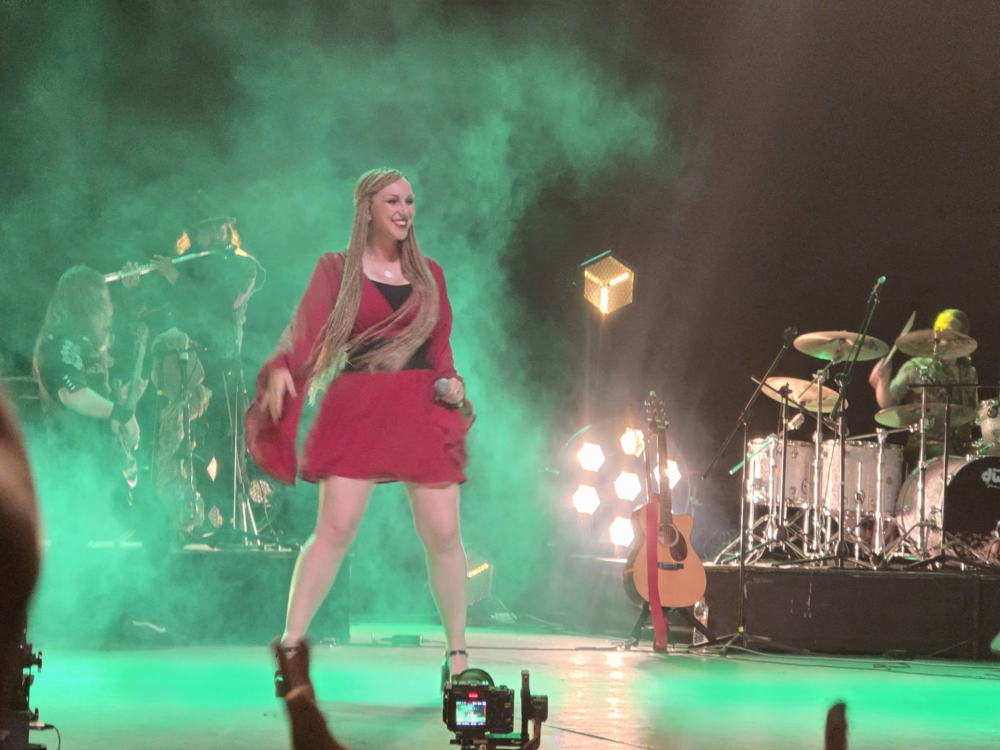
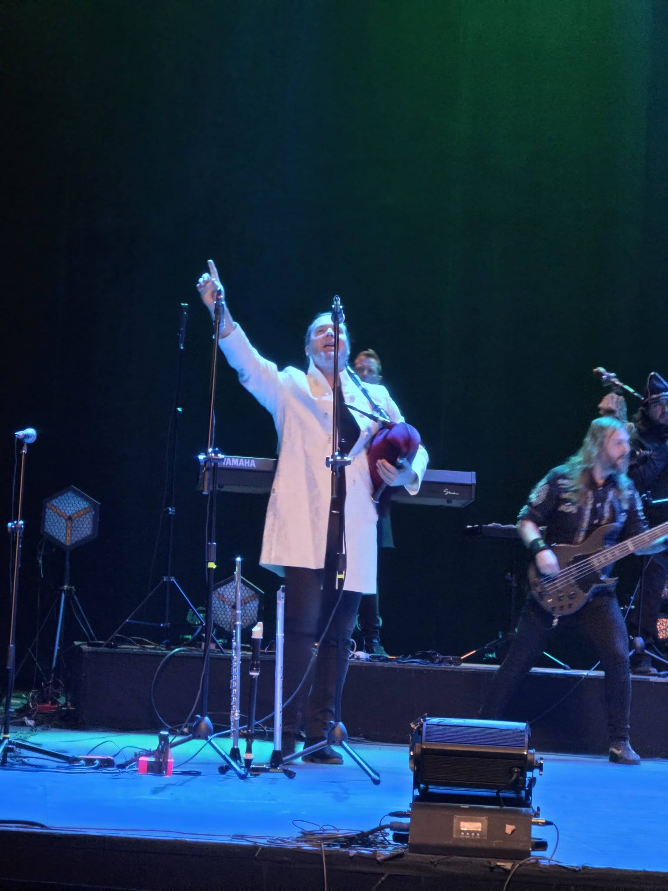
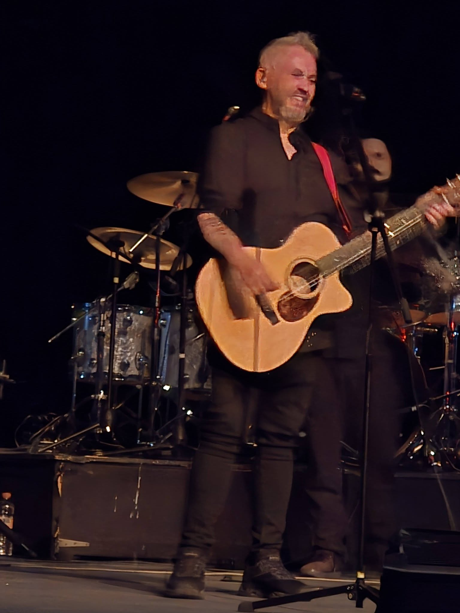

SAUROM: ENTRE JUGLARES
Y CICATRICES

Hace un año estos tipos de Saurom reventaban la Arena CDMX con un show enorme, casi tres horas de ruido bien contado. Esta vez, el 17 de abril, bajaron el volumen… pero no el alma. Se metieron al Teatro de la Ciudad Esperanza Iris, ese lugar viejo que ha sobrevivido a sí mismo más veces de las que cualquiera admitiría, y lo convirtieron en una especie de confesionario con guitarras.
El teatro sigue en pie. Saurom también. Ambos saben lo que es caerse y volver a levantarse sin pedir permiso, y eso es lo que nos conecta con ellos. Treinta años tocando, creyendo en lo suyo aunque el mundo mire para otro lado.
EL PESO DE LA CERCANÍA
No hubo zancos, ni fuego, ni criaturas salidas de una pesadilla medieval. No hizo falta. La cercanía lo cambió todo. La banda estaba ahí, a unos metros, respirando el mismo aire. Y eso pesa más que cualquier espectáculo plástico.
EL RECORRIDO: DE LA MELANCOLÍA A LA POSADA
Cuando los acordes tocaron El joven poeta, Estrella sin luz o La musa y el espíritu, más de uno se quedó clavado en su propio pasado. Luego vino la fiesta: Cambia el mundo, Vive y La posada del pony pisador. Así son estos conciertos: te levantan, te rompen, te vuelven a armar… y tú feliz de la vida.
SETLIST DESTACADO: CDMX 17/04
- INTIMIDAD: Dalia, Pintor de suspiros, Sueños perdidos.
- HIMNOS: El círculo juglar (La Ola Juglar), El rey que no sabía mandar.
- CULTO: Maryam (El álbum incomprendido que se volvió ley).
GALERÍA: LA NOCHE DE LOS JUGLARES







LOS PROTAGONISTAS
Arriba del escenario no había poses baratas. Narci Lara manejando todo como un ritual; José Gallardo "Joselito" sonriendo entre riffs; y Elizabeth Amoedo... ella no canta, te atraviesa. Puede ser suave o brutal, y en ambos casos te deja marcado.
RUTA JUGAR: ABRIL 2026
- 16: León (Finalizado)
- 17: CDMX Acústico (Finalizado)
- 18: Puebla
- 19: Toluca
- PRÓXIMOS: Monterrey, Guadalajara, Celaya, Mérida.
Si nunca los has visto en vivo, estás perdiendo algo que no se explica bien con palabras. Es como recordar algo que nunca viviste… y aun así te pertenece. Hazte juglar.